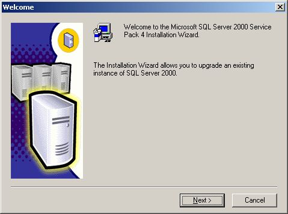
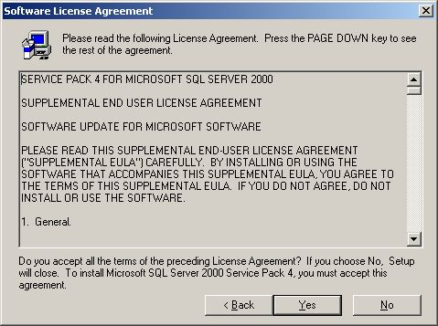
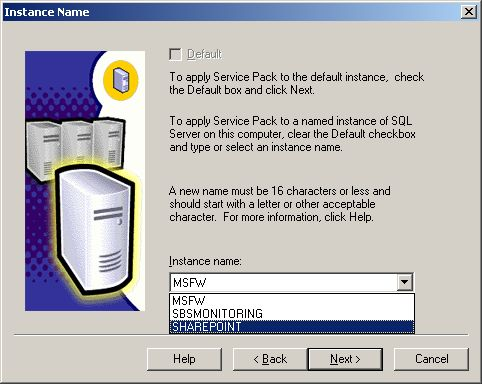
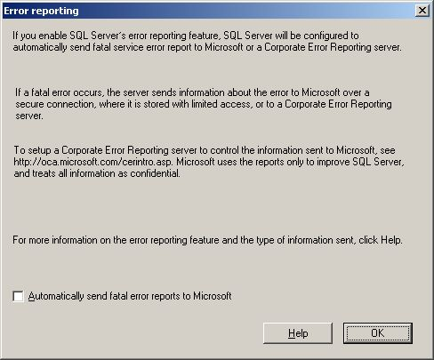
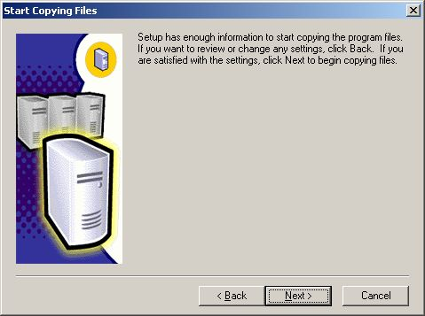
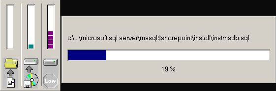
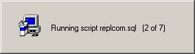
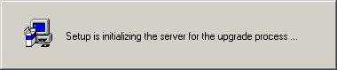
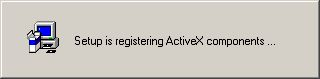
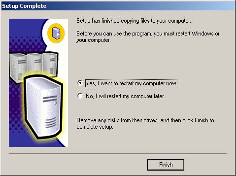

Download SQL Server 2000 SP4:
Filename: SQL2000-KB884525-SP4-x86-ENU.EXE
Download URL: SQL Server 2000 - SP4 - KB884525 - x86 - ENU
The last Service Pack include all fix in other older Service Pack
Execute: SQL2000-KB884525-SP4-x86-ENU.EXE



This is an important window. You must now choose which instance you are going to upgrade to SQL Service Pack 4.


You can choose to send fatal errors to Microsoft for research, click OK.

Setup informs you that it has enough information to install SQL Service Pack 4, click Next.

Setup is copying files to your servers hard drive.

Setup is running several scripts to update your SQL instance to SQL 2000 Service Pack 4.

Setup continues....

Aha, there is the upgrade for Full Text Search.

Registering ActiveX...
Setup informs you to make backups. Click OK.
